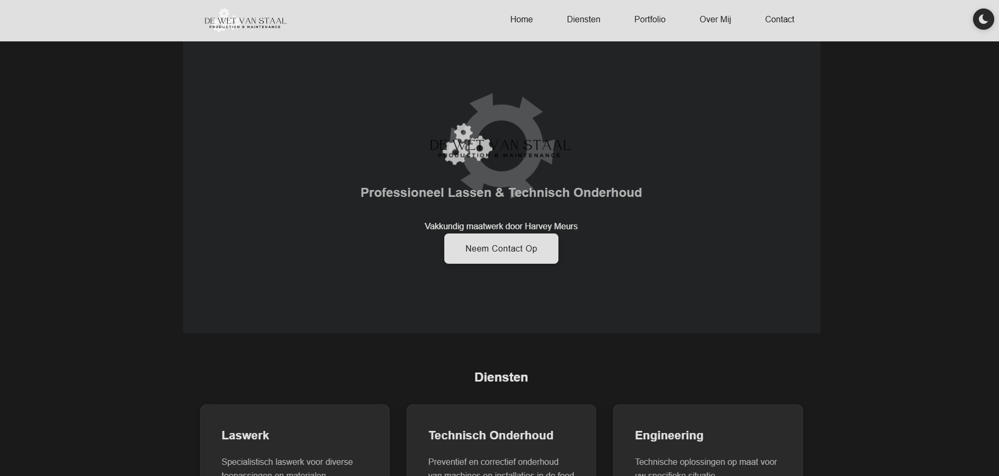
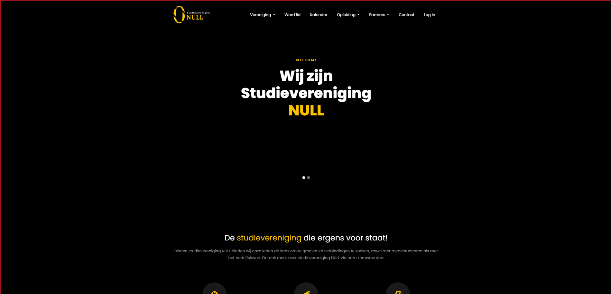

De wet van staal

Bij TwinPixel zijn we trots op de websites die we hebben ontworpen en ontwikkeld voor onze klanten. Elk project is uniek en op maat gemaakt om aan de specifieke behoeften en doelstellingen van onze klanten te voldoen.
Bekijk hieronder een selectie van onze recente projecten en laat je inspireren door wat wij voor jou kunnen betekenen.
Laat ons je helpen om jouw online aanwezigheid naar een hoger niveau te tillen.